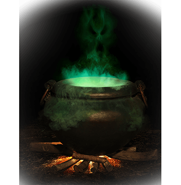
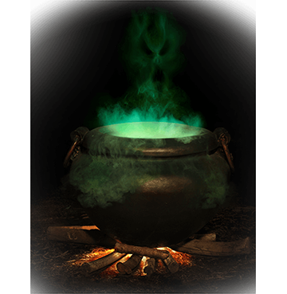

какая ты нечисть?

Во все времена люди верили в существование нечистой силы: несущих зло и представляющих опасность для человека существ. Духи, демоны, бесы, призраки, ведьмы, русалки, домовые и ожившие мертвецы обитали повсюду и не упускали ни малейшей возможности напакостить.
Что только не делали люди, чтобы обезопасить себя от их проделок: в Древнем Риме на похоронах громко били в большие барабаны, чтобы напугать покойного для того, чтобы он не вернулся из мира мертвых, на ближнем Востоке, чтобы отогнать злых духов, вбивали большой гвоздь в то место, где случилось убийство, иначе нечистая сила станет беспокоить живых, в Европе хоронили мертвых, связывая за спиной руки и придавливая могилу тяжелым камнем.
Но при том суеверном страхе, который вызывала нечистая сила, люди всегда интересовались ею: самые смелые пытались выйти на контакт (правда, редко, когда это хорошо кончалось), другие сочиняли истории и сказки, главными героями которых становились обитатели потустороннего мира.
В наши дни ситуация не изменилась.
22 февраля на экраны выходит фантастический триллер Сергея Гинзбурга «Вурдалаки» по мотивам рассказа русского классика Алексея Толстого «Семья Вурдалака». Главным героям предстоит погрузиться в мир неизведанного и узнать, что лучший способ борьбы с нечистой силой и злыми духами – настоящая и чистая любовь.


Нечистая сила:
как бороться?

 

Если в лесу или неподалеку от водоема встретите русалку, нужно бросить платок, гребень или что-нибудь из одежды. При этом ни в коем случае нельзя смотреть русалкам в глаза.


Если в лесу или неподалеку от водоема встретите русалку, нужно бросить платок, гребень или что-нибудь из одежды. При этом ни в коем случае нельзя смотреть русалкам в глаза.
Если в лесу или неподалеку от водоема встретите русалку, нужно бросить платок, гребень или что-нибудь из одежды. При этом ни в коем случае нельзя смотреть русалкам в глаза.


Если в лесу или неподалеку от водоема встретите русалку, нужно бросить платок, гребень или что-нибудь из одежды. При этом ни в коем случае нельзя смотреть русалкам в глаза.

Рассказы о мертвецах, проливающих кровь, найдены почти во всех культурах по всему миру, включая самые древние. Вампиры или вурдалаки – ожившие мертвецы, нередко принимающие обличие летучей мыши и питающиеся людской кровью. Имен у вампиров много. В русской традиции их называют «упырь», а с легкой подачи А.С. Пушкина и его одноименного стихотворения 1836 года – «Вурдалак».
В древневавилонской мифологии вампироподобные духи называются «лилу», в Индии – «веталы», в Древнем Риме – «ламиями» и «лемурами», в Румынии – «стригоями». До XIX века вампиров изображали ужасными существами, по сути живыми трупами: с отросшими ногтями и волосами и в грязной от могильной земли одежде.
Но после появления произведения «Вампир» авторства Джона Полидори, где главному герою, вампиру, естественно, был придан романтичный облик, имидж вампиров претерпел значительные изменения. Джон Полидори, личный врач лорда Байрона, взял многие черты из облика своего нанимателя и пациента, и в его интерпретации зловещий вампир стал аристократом и обладателем горящего взгляда, спутанных черных волос и интересной бледности. Сущность его это не изменило, он также, как и канонические вампиры, пил кровь, но выглядел уже не столь отталкивающим.
Именно в таком виде вампиры и перекочевали в литературу, а позже и в кино XX и XXI веков.
Все вампиры по поверьям боятся чеснока, солнечного света, распятия и осинового кола, забитого в сердце. Также считается, что помочь от вампира может стебель дикой розы, боярышник или алоэ, повешенный за дверью.
Но не надо думать, что вампиры – пережиток прошлого. И в XX веке сообщения об их нападениях встречаются по всему миру. В 1970-х годах в Лондоне появились сообщения о нападениях на кладбище Хайтейт, В конце 2002 по африканской стране Малави прокатилась настоящая истерия по поводу вспышек нападений на людей, в 2005 году в английском Бирмингеме появились слухи, что кто-то укусил
нескольких людей.
про вампиров
Кто такие энергетические вампиры?
Лучший способ борьбы с энергетическим вампиром – избегать его общества и не поддаваться провокациям.
современные способы защиты
Современные способы защиты от нечистой силы не столь радикальны. Это могут быть амулеты с камнями оберегами (например, тигровый глаз бережет своего владельца от энергетических ударов, агат способен защитить от сильной энергетической атаки и свести на нет попытки энергетических вампиров вывести вас из себя, а черный оникс способен не только защитить своего владельца от сильного колдовства, но и возвращает зло недоброжелателю).
Считается, что мощным оберегом может стать и браслет из нитей красного цвета. В старину ну Руси даже пуповину младенцам перевязывали такой ниткой, чтобы уберечь его от злых духов. Советуют делать семь узлов, один из которых будет держать нить на руке. В старину никогда не делали таких талисманов для себя самого, просили об этом близких друзей или родственникам, которым доверяли.


Еще один помощник в борьбе с темными силами – булавка от сглаза. Своей головкой она притягивает отрицательную энергию (сглаз и порчу), направленную на своего хозяина и направляет циркулировать в закрытом пространстве (внутри себя), не позволяя причинить зло. Иногда для усиления защитных качеств на булавку надевают красную бусину. Считается, что чем ярче булавка, тем сильнее ее свойства как оберега. Носить талисман нужно в районе сердца головкой вниз.

какая ты нечисть?
Вы — Вампир
В вас дремлет демоническая сила, которая время от времени находит выход, и тогда на вашем пути лучше не становиться. Возможно, у вас в роду были ведьмы или колдуны! Но не стоит пугаться. В ваших силах направить энергию в мирное русло, чтобы даже случайно не причинить никому вреда. Всегда помните о своей силе и не давайте волю эмоциям. Иначе последствия могут расстроить не только тех, кто рядом, но и вас саму. Ваш прототип – Витольд из фильма «Вурдалаки». Хотите узнать о нем больше? Тогда обязательно сходите на премьеру 22 февраля. И главное помните – все мы те, какими сами захотели стать!
Вы — Оборотень
Вы – очень сложная личность. Внутри вас, как на весах, борются добро и зло. Вы переменчивы и в зависимости от настроения можете быть милой или несносной. В мифологии к вам ближе всего оборотни и полукровки, человеческое начало в которых борется с демоническим. Ваш главный внутренний враг – ваша порывистость. Не забывайте, что первое решение не всегда верное. Давайте себе время обдумать ситуацию и сделать взвешенный выбор. Ваш прототип – полукровка Милена из фильма «Вурдалаки». Сумеет ли она сделать правильный выбор и встать на сторону добра? Ответ узнаете в кино!
Вы — Одержимый

Вы спокойный человек и не склонны кидаться в крайности. Эти на первый взгляд положительные качества иногда играют с вами злую шутку. Иногда своим бездействием вы наносите вред и себе, и близким. Вам проще послушать окружающих, чем самой принять решение. Но помните, что не все, кто дает советы, делают это бескорыстно и желая вам добра. Ваш прототип – слуга Андрея из фильма «Вурдалаки». Он не знает, чью сторону принять и по какой дороге идти: добра или зла, и от своей нерешительности склонен выбирать легкий путь, который может привести к трагедии. Обязательно сходите в кино на премьеру фильма, и, возможно, увидев себя будто со стороны, вы изменитесь к лучшему!
Вы — Ангел-хранитель
Вас часто называют «светлым человеком», и это неспроста. Ваша душа чиста, и зло окружающего мире не прилипает к вам. Вашим близким и друзьям очень повезло: вы всегда придете на помощь и поддержите их добрым советом. Но вам надо научиться думать и о себе, чтобы однажды не оказаться обманутой, а при встрече со злом уметь дать ему отпор. Да, все верно – иногда проявить силу и стойкость вместо того, чтобы «подставить другую щеку» - проявление дальновидности и мудрости.
Вам очень близок по духу главный герой фильма «Вурдалаки» - Андрей. Он оказывается один на один с древним злом, и от его силы и стойкости, зависит не только его жизнь, но жизнь его любимой. Заинтригованы? Тогда скорее в кино! Фильм «Вурдалаки» выходит на экраны уже 22 февраля!